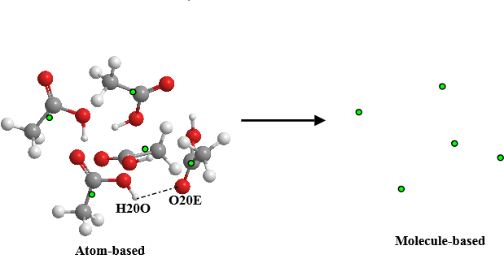
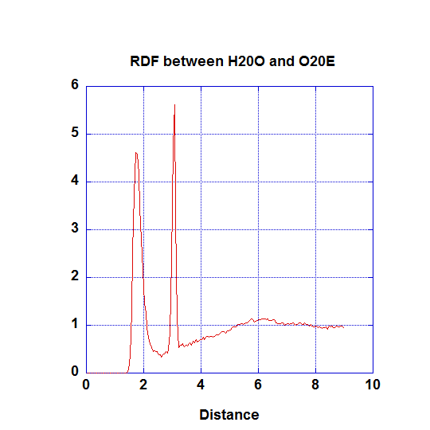
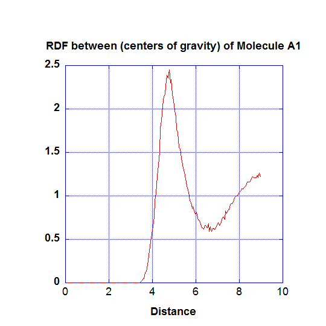

Analysis Criteria - Molecule-based and Atom-based¶
Once the atoms are assigned to Groups, you would then need to decide the analysis type, of whether it would be based on atoms or molecules - the atom-based or molecule-based analysis. This can be selected in Option (3) in the Atom Range Section.
Diagram below shows a system consists of some ethanoic acid molecules, and iilustrates the way how DL_ANALYSER perceive the difference between the atom-based and the molecule-based analysis.
{kind=link}

Atom-based
As the name suggests, this analysis type means all analysis will be carried on the basis of individual atoms. For instance, to carry out radial distribution functions (RDF) between any pairs of atoms, atom labels can be defined explicitly. The graph below shows the RDF between the hydroxyl hydrogen (H20O) and the carbonyl oxygen (O20E).
{kind=link}
The first peak refers to the hydrogen bond between H20O and O20E. The second peak refers to the intra-distance between the atom pair within the carboxylic groups of ethanoic acid molecules.
Molecule-based
For this type of analysis, DL_ANALYSER will carry out the following procedures:
- Identify molecules within a Group.
- Calculate the center of gravity of the molecules.
- Carry out analysis.
As the diagram shown above, this means the system is now reduced to points of centers of gravity, represent as green dots.
To determine the type of molecules present in the system, DL_ANALYSER would need additional information. This is given in Options (5) - (8). These options provide information to DL_ANALYSER which molecules to look for, by giving a name and the number of atoms that made up a molecule.
Up to two different molecules can be identified for each Group: Options (5) and (6) for Group A and Options (7) and (8) for Group B. They are designated with special molecule labels, which are Molecule A1 and A2 for Group A; Molecule B1 and B2 for Group B.
Note
A Molecular Group may consist of other molecules. However, DL_ANALYSER will ignore molecules that do not match with the difinition given in the Options (5)-(8).
| TIP: | At the moment, DL_ANALYSER can only distinguish molecules in terms of number of atoms. Should your system contained different molecules with the same number of atoms, separate the molecules into Group A and Group B, respectively. |
|---|
Example below shows how to define a molecule-based analysis for a system that contain ethanoic acid molecules.
--- Atom Range Definition and overall conditions for analysis as below.
(1) 1 5382 * Range of atom index (Group A). This must always define.
(2) none * Range of atom index (Group B), if applicable. Or put 'none'.
(3) 2 * Analysis type: 1=atom-based 2 = molecule-base
(4) 1 * Atom-based analysis criteria: 1=all 2= within molecules 3= between molecules
(5) acid 8 * Molecule-base analysis: name and no of atoms in Group A (MOLECULE A1)
(6) none * Molecule-base analysis: name and no of atoms in Group A (MOLECULE A2, or 'none')
(7) none * Molecule-base analysis: name and no of atoms in Group B (MOLECULE B1, or 'none')
(8) none * For molecule-base analysis: name and no of atoms in Group B (MOLECULE B2, or 'none')
(9)all * Range of MD time (ps) samples: t1 t2 (put 'all' if all samples to be included).
…
…
Option (5) defines the molecule to look for: it must consist of eight atoms (which what made up an ethanoic acid molecule) and is given the name ‘acid’.
Note
The name ‘acid’ is arbitrary and does not affect the results analysis. However, it is internally recognise as the Molecule A1.
Running DL_ANALYSER will give the following information in the dl_analyser.output file:
...
...
Molecule A1 (acid) identified:
Name: acid mass: 60.053680 composition: C2 H4 O2
There are 674 Molecule A1.
...
...
When carrying out the RDF, this would simply involve determination of distances between the centres of gravity of the molecules (Between A1-A1 pairs). The results is shown below.
{kind=link}